linzejie@westlake.edu.cn | +86 16675647334
Bachelor of Biomedical Engineering
Shantou University | 2018 – 2022
- GPA: 3.96/5.0 Ranking: 2/35
Master of Science (Data Science - Precision Medicine)
University of Macau | 2022 – 2024
- Graduated with Excellent Honours (GPA: 3.92/4.0)
Liu, Ting, Xiaohang Zhou, Zejie Lin, Jiale Chen, and Meiai Lin. 3D-printing-based microfluidic device for fast light scattering imaging of single cells, 11895, 1189511, 2021. doi.org/10.1117/12.2601335. (Conference Article).
Li, Jiajun, Changjiang Xu, Bingbo Shi, Yawen Lyu, Zejie Lin, Wei Shi, Jiachen Xu, Xinle Zou, Xiaomin Wang, Hanqing Zhao, Chengchen Zhao, and Duanqing Pei. In vitro mimicking of humanized cardiogenesis under porcine condition. Cell & Bioscience, 16, 22, 2026. doi.org/10.1186/s13578-025-01521-8.
Zejie Lin, Zheting Zhang, Wei Shi, Tianci Kong, Dong Liu, Tiancheng Yu, Jiajun Li, Yuhao Wu, MaoXiang Shi, Yawen Lyu,Yuxiang Yao, Duanqing Pei, Chengchen Zhao. CDesk: A Lightweight, Locally Deployable Toolkit for Modular NGS Analysis Workflows.
Chengchen Zhao, Zheting Zhang, Zejie Lin, Jiajun Li, Wei Shi, Yuhao Wu, MaoXiang Shi, Tianci Kong, Bingbo Shi, Xiaomin Wang, Jinzhu Xiang, Changjiang Xu, Yu Fu, Jin Ming, Yue Qin, Junqi Kuang, Hanning Wang, Yuxiang Yao, Bo Wang, Duanqing Pei. A Haplotype-resolved Telomere-to-Telomere Pig Genome Supporting Xenotransplantation. Co-first authors.
Kaipeng Wang, Xingnan Huang, Huiry Gao, Junyang, Li, Tao Huang, Minjing Ke, Zejie Lin, Yue Qin, Duanging Pei. A Wnt-CDX2 Axis Drives Chromatin Remodeling during Reprogramming to Human Presomitic Mesoderm State. Under
Review.
AI Bioinformatics Department | Algorithm Engineer
Hangzhou Xinzao Biotechnology Co., Ltd. | Dec 2023 – Sep 2024
Research Assistant
Westlake University | Oct 2024 – Now
Master project
Identification and validation of potential cell surface protein and druggable biomarker genes as alternatives or supplements to PSMA for mCRPC patients
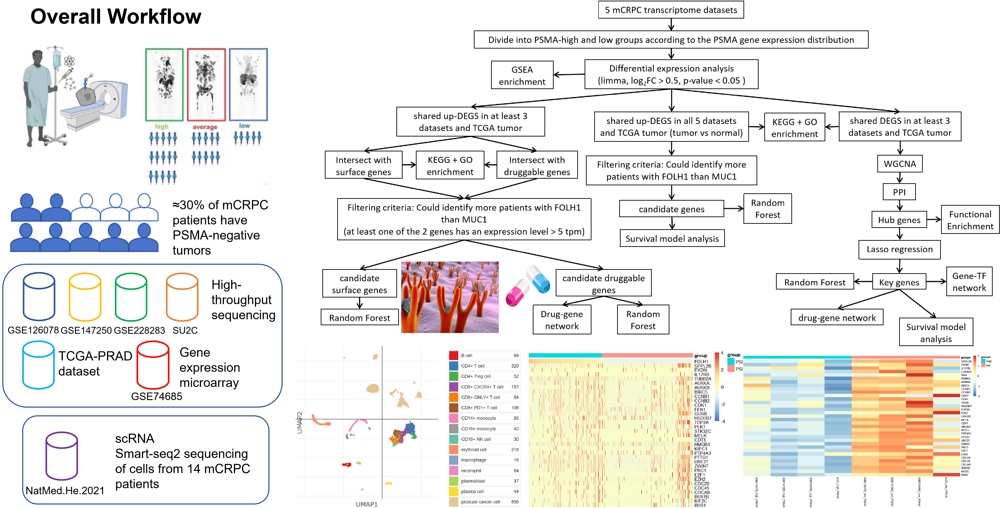
Automated Tools Development for Enzyme Engineering
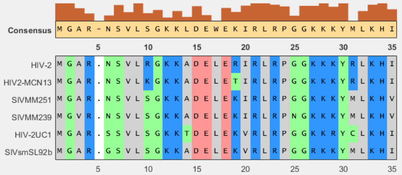
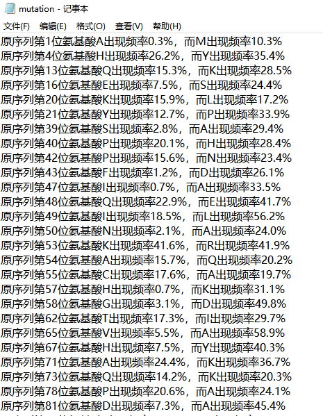
Developed an automated tool for ancestral sequence reconstruction of proteins, enabling the inference of protein evolutionary landscapes and ancestral sequences.
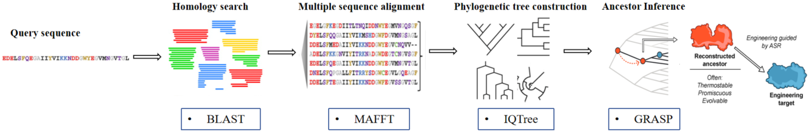
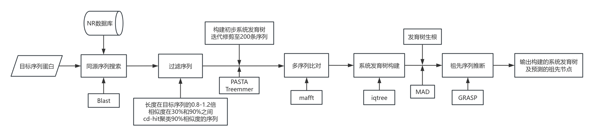
Reproduced and modified the EnzymeMiner tool to explore protein sequence space and select starting points for protein engineering.
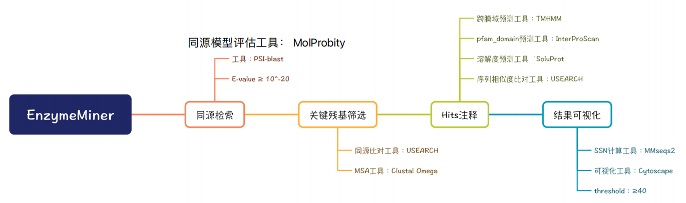
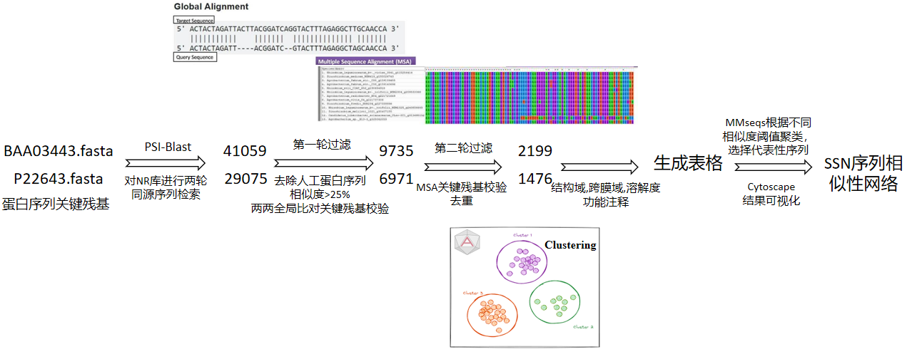
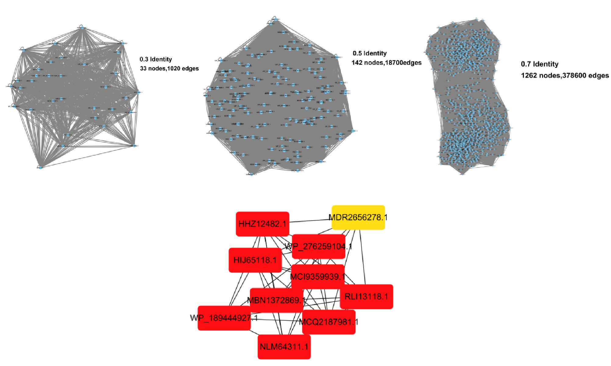
Oligonucleotide design algorithm for in vitro gene synthesis
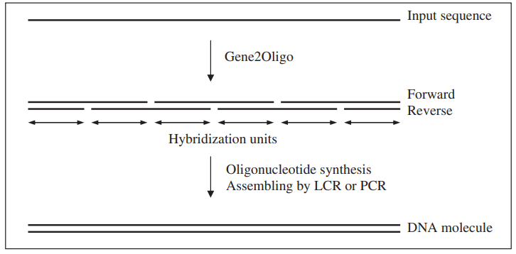
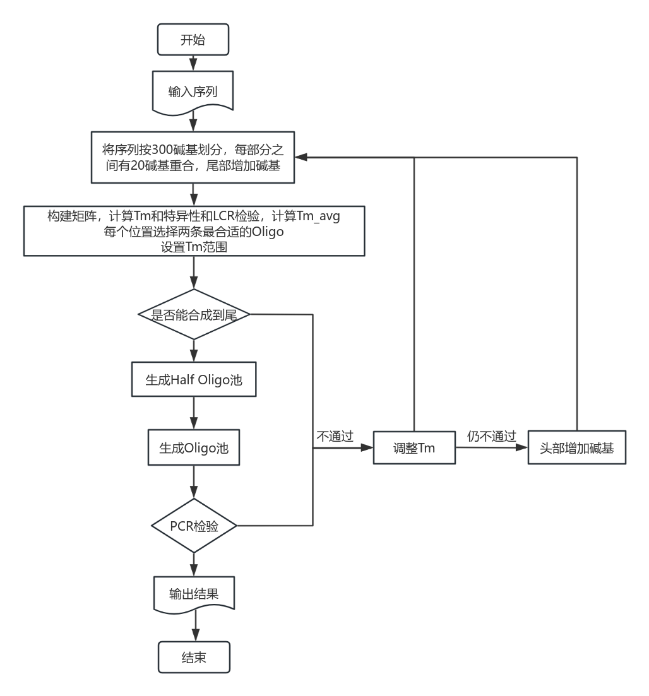
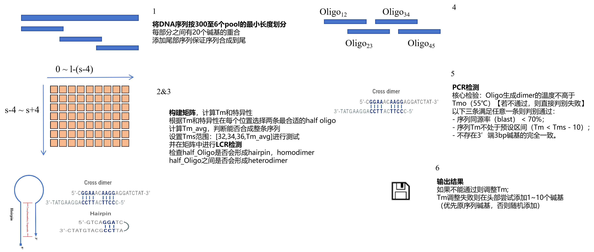
CDesk
A Lightweight, Locally Deployable Toolkit for Modular NGS Analysis Workflows
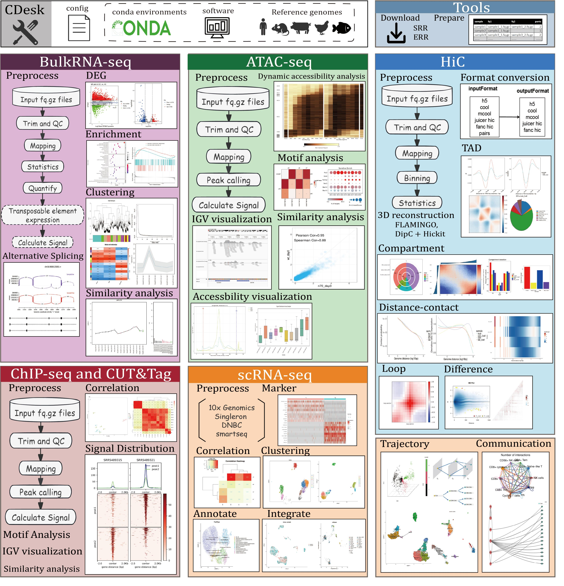
Haplotype-resolved Telomere-to-Telomere Erhualian Pig Genome Project
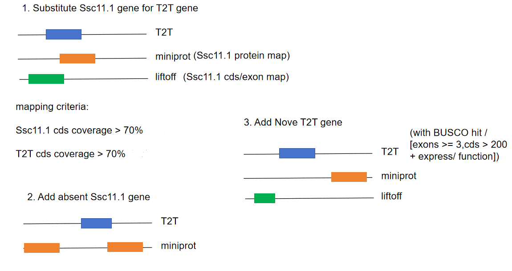
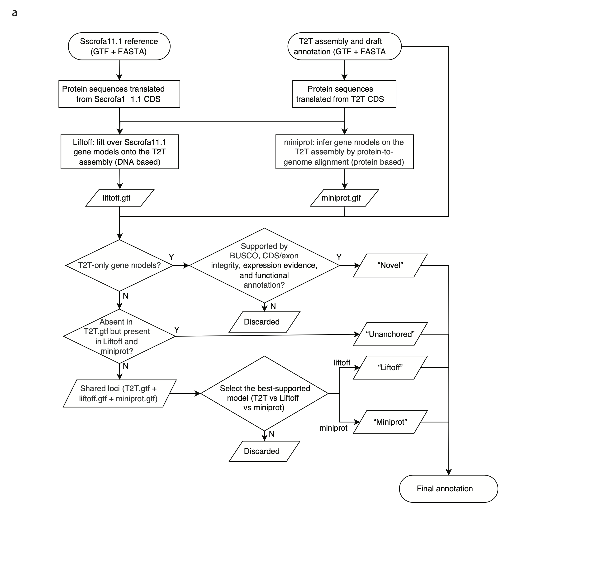
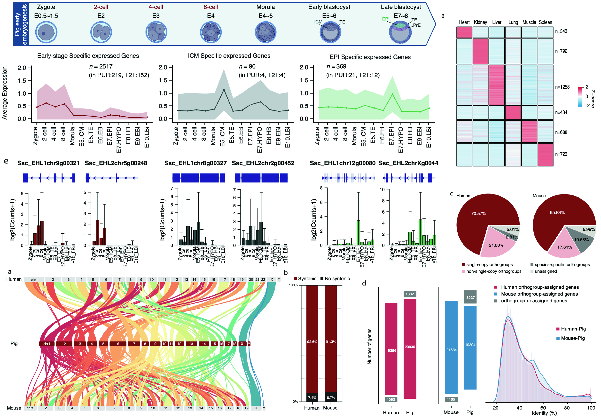